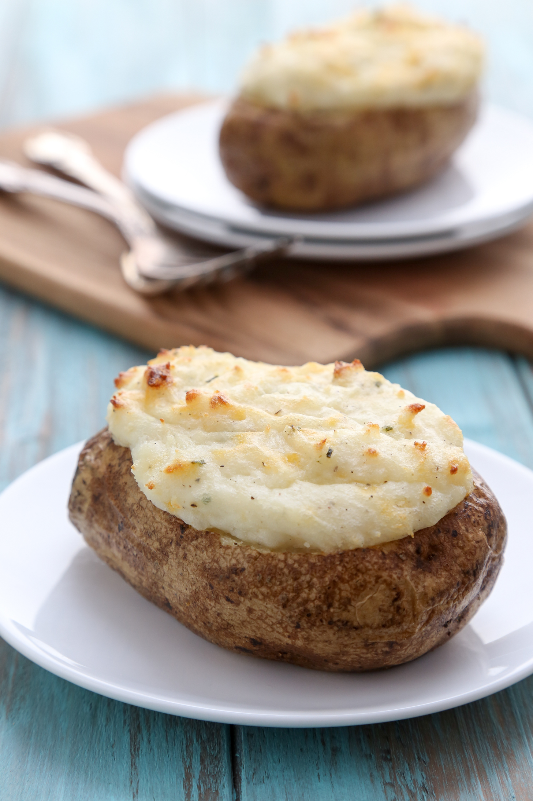

Home
Microwave Baked Potato

Fluffy and buttery baked potato with sour cream and cheese.
Ingredients
- Russet Potato
- Butter
- Sour Cream
- Salt
Steps
- Poke holes in your potato with a fork.
- Place potato in a microwave safe bowl.
- Microwave for 5-6 minutes depending on size.
- Cut into potato and stuff with 1 tbsp of butter.
- Add sour cream and cheese to taste.
- Enjoy!